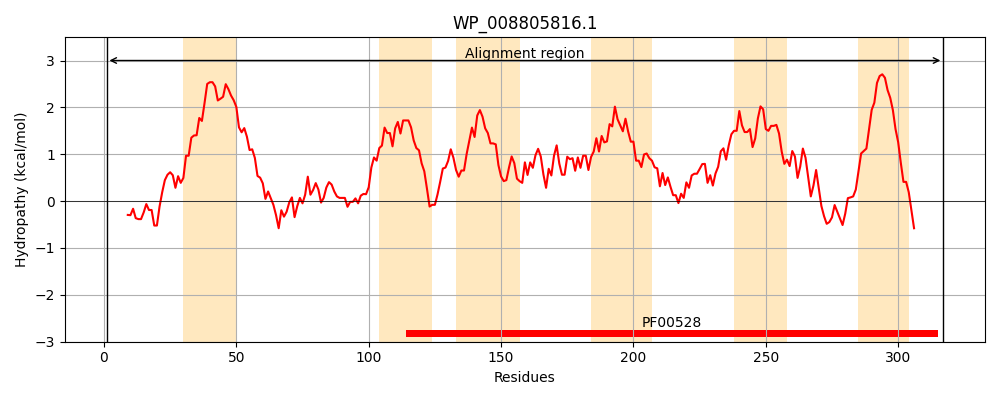
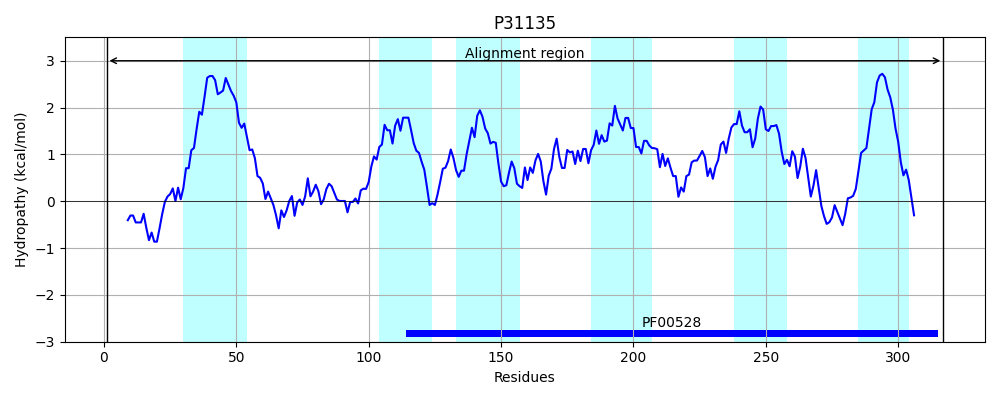
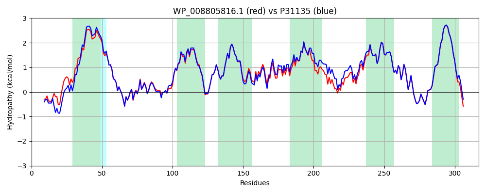

Hit Accession: P31135
Hit TCID: 3.A.1.11.2
Hit Description: gnl|BL_ORD_ID|9754 gnl|TC-DB|P31135|3.A.1.11.2 Putrescine transport system permease protein potH - Escherichia coli.
Mach Len: 317
e:0.000000
Query TMS Count : 6
Hit TMS Count: 6
TMS-Overlap Score: 6.600000
Predicted Substrates:CHEBI:8650;putrescine
BLAST Alignment:
Score: 1499 , Bit scores: 582 bits, E-value: 0.0e+00, Alignment length: 317, Percentage identity: 90
Query: 1 MSTVESPSGAKKPGGFGLWAARLQMAHGRKLVIALPYLWLILLFMLPFLIVFKISLAEMARAIPPYTELMEWADGQLTLTLNFANFLQLTDDPLYFEAYLQSLQVAGISTICCLLLGYPLAWAVAHSKPSTRNILLLLVILPSWTSFLIRVYAWMGLLKSNGVLNNFLLWLGVIDQPLEILHTNLAVYIGIVYAYLPFMVLPIYTALTRIDYSLVEASLDLGARPLKTFFQVIVPLTKGGIIAGSMLVFIPAVGEFVIPELLGGPDSIMIGRVLWQEFFNNRDWPVASAVAIVMLLLLIVPIMWFHKHQQKQMGEQG 317
MST+E + +K PGGF LW ++LQM HGRKLVIALPY+WLILLF+LPFLIVFKISLAEMARAIPPYTELMEWADGQL++TLN NFLQLTDDPLYF+AYLQSLQVA IST CCLL+GYPLAWAVAHSKPSTRNILLLLVILPSWTSFLIRVYAWMG+LK+NGVLNNFLLWLGVIDQPL ILHTNLAVYIGIVYAY+PFMVLPIYTAL RIDYSLVEA+LDLGARPLKTFF VIVPLTKGGIIAGSMLVFIPAVGEFVIPELLGGPDSIMIGRVLWQEFFNNRDWPVASAVAI+MLLLLIVPIMWFHKHQQK +GE G
Sbjct: 1 MSTLEPAAQSKPPGGFKLWLSQLQMKHGRKLVIALPYIWLILLFLLPFLIVFKISLAEMARAIPPYTELMEWADGQLSITLNLGNFLQLTDDPLYFDAYLQSLQVAAISTFCCLLIGYPLAWAVAHSKPSTRNILLLLVILPSWTSFLIRVYAWMGILKNNGVLNNFLLWLGVIDQPLTILHTNLAVYIGIVYAYVPFMVLPIYTALIRIDYSLVEAALDLGARPLKTFFTVIVPLTKGGIIAGSMLVFIPAVGEFVIPELLGGPDSIMIGRVLWQEFFNNRDWPVASAVAIIMLLLLIVPIMWFHKHQQKSVGEHG 317 | Protein Hydropathy Plots: |
|---|
|  |  |
Pairwise Alignment-Hydropathy Plot:
|
|---|
|  |